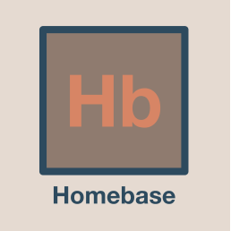

With an extended spring break and plenty of time on my hands thanks to COVID-19, I decided to be productive and pick up some new front-end skills. I decided to pay homage to my childhood and use the PokeAPI to create an online Pokedex. And just like those old games, I got sort of obsessed with this project. That being said, I really enjoyed making this site, and hope to build it out more in the future. I built it with Typescript, React JS, and a little help from Webpackage.You can sift through all 964 pokemon, and even search for a specific species! Take look using the link below.
Check out the site hereA little bit about me
Hello and thank you for checking out my website! I'm Sanath, a rising junior at Northwestern University. I've always been interested in entrepreneurship - I love bringing new, original ideas to life. Often, being part of a new venture requires an entrepreneur to wear a lot of hats. I like to think I excel at this. Throughout my time at NU, I've picked up skills in data analytics and machine learning, web development, hardware, and project management. I created this page to demonstrate some of these skills through a few of my favorite projects in and out of the classroom. I'd also suggest checking out my LinkedIn to view my work experience. If you'd like to get in touch, you can find my contact info at the bottom of the page. Currently, I'm actively looking for Summer 2021 intern roles in either Consulting or Product.
Education
B.S Computer Science , Minor in Psychology
Kellogg Certificate Program for Undergraduates in Managerial Analytics

Homebase
Back in 2019 (when things were still normal!), my friends and I were struggling to find off-campus housing in Evanston. We couldn't find many places that fit our criteria, and even when we did the landlords were often unresponsive. A friend and I created Homebase to help. Homebase is an online platform that connects students to off-campus housing. I'm the CEO and I own the engineering behind the product as well as the product timeline and direction. While this project is still new, I'm really excited about our progress and I've already learned a ton in the process. Check out Homebase here.

And a few projects I've worked on

For the final project of my Human Computer Interaction Course, my teammates and I created a sample website design to help people journal positive memories. This website uses barebones HTML, CSS, and Javascript, so we could really focus on the design process (no backend!). We went through multiple iterations of the site, with plenty of user testing. It's really simplistic, but we got really great reviews on the clean and beautiful UI. It's currently live, so feel free to poke around using the link below. The username is buymepants (ask me if you want to know why) and the password is password2 .
Check out the site hereThis is a toy Convolutional Neural Network, made for a small task for Northwestern's HABits lab. There's no data here (due to privacy concerns), just my code. There are two CNNs trained on two different datasets (original and masked), but they have the same architecture. They're both simple: just two convolutional layers and one dense layer. Still, they achieved around 96% accuracy on our test datasets. I developed the CNNs using TensorFlow and wrote a neat function using OpenCV to pull frames from a video (which was the raw data source). The repository is linked below.
Check out the repo here
As an intern at the Hallatscheck Evolutionary Dynamics lab at UC Berkeley, I studied the evolutionary dynamics of bacteriophages (viruses that attack bacteria) that live in your gut. Bacteria have very short lifespans, making them a great model organism to study how evolution plays out over time. While there's plenty of research going on regarding the bacteria of the Human Gut Microbiome, there isn't a lot of literature about the viruses that also exist in the biome. Here, I look at a recently discovered virus dubbed "CrAssphage" (I didn't name it).
Check out the poster hereIntrigued? Send a note to sanath@u.northwestern.edu or connect with me over LinkedIn!